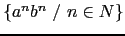

Sig: Expresiones Regulares en sed Sup: Expresiones Regulares en C Ant: Expresiones Regulares en Flex Con:
$ cat unput2.l
%array
%%
[a-z] {unput(toupper(yytext[0]));}
[A-Z] ECHO;
%%
$ flex unput2.l ; gcc lex.yy.c -lfl;a.out
abcd
ABCD
Un problema importante con unput es que, cuando se utiliza la
opción %pointer, las llamadas a unput destruyen los
contenidos de yytext. Es por eso que, en el siguiente ejemplo se
hace una copia de yytext. La otra alternativa es, por supuesto,
usar la opción %array.
$ cat unput.l
%%
[0-9]+ {
int i;
char *yycopy = (char *) strdup(yytext);
unput(')');
for(i=strlen(yycopy)-1; i>=0; --i)
unput(yycopy[i]);
unput('(');
free(yycopy);
}
\([0-9]+\) printf("Num inside parenthesis: %s\n",yytext);
.|\n
$ flex unput.l ; gcc lex.yy.c -lfl ; a.out
32
Num inside parenthesis: (32)
(43)
Num inside parenthesis: (43)
$ cat input.l
%%
"/*" {
int c;
for(;;) {
while ((c=input()) != '*' && c != EOF)
;
if (c == '*') {
while ((c = input()) == '*')
;
if (c == '/') break;
}
if (c == EOF) {
fprintf(stderr,"Error: EOF in comment");
yyterminate();
}
}
}
La función yyterminate() termina la rutina de análisis léxico y devuelve un cero indicándole a la rutina que llama que todo se ha acabado.
Por defecto, yyterminate() es llamada cuando se encuentra
un final de fichero. Es una macro y puede ser redefinida.
$ flex input.l ; gcc lex.yy.c -lfl ; a.out hello /* world */ hello unfinished /* comment unfinished Error: EOF in commentHe presionado CTRL-D después de entrar la palabra comment.
REJECT le indica al analizador que proceda con la
siguiente regla que casa con un prefijo de la entrada. Como es habitual en
flex, se elige la siguiente regla que casa con la cadena mas
larga. Consideremos el siguiente ejemplo:
$ cat reject.l
%%
a |
ab |
abc |
abcd ECHO; REJECT; printf("Never seen\n");
.|\n
La salida es:
$ gcc lex.yy.c -lfl;a.out abcd abcdabcabaObserve que
REJECT supone un cambio en el flujo de control:
El código que figura después de REJECT no es ejecutado.
yymore() hace que, en vez de vaciar yytext
para el siguiente matching, el valor actual se mantenga,
concatenando el valor actual de yytext con el siguiente:
$ cat yymore.l %% mega- ECHO; yymore(); kludge ECHO; $ flex yymore.l ; gcc lex.yy.c -lfl ; a.out mega-kludge mega-mega-kludgeLa variable
yyleng no deberıa ser modificada si se hace uso de la
función yymore().
yyless(n) permite retrasar el puntero de lectura
de manera que apunta al carácter n de yytext.
Veamos un ejemplo:
$ cat yyless.l %% foobar ECHO; yyless(4); [a-z]+ ECHO; $ flex yyless.l; gcc lex.yy.c -lfl; a.out foobar foobararVeamos un ejemplo mas ``real''. supongamos que tenemos que reconocer las cadenas entre comillas dobles, pero que pueden aparecer en las mismas secuencias de escape
\". La estrategia general del algoritmo
es utilizar la expresión regular \"[^"]+\" y examinar si
los dos últimos carácteres en yytext son \". En tal caso,
se concatena la cadena actual (sin la " final) como prefijo para
el próximo emparejamiento (utilizando yymore).
La eliminación de la " se hace a través de la ejecución de
yyless(yyleng-1), que al mismo tiempo garantiza que el próximo emparejamiento
tendrá lugar con este mismo patrón \"[^"]+\".
$ cat quotes.l
%%
\"[^"]+\" {
printf("Processing string. %d: %s\n",yyleng,yytext);
if (yytext[yyleng-2] =='\\') {
yyless(yyleng-1); /* so that it will match next time */
yymore(); /* concatenate with current yytext */
printf("After yyless. %d: %s\n",yyleng,yytext);
} else {
printf("Finished. The string is: %s\n",yytext);
}
}
El ejemplo no puede entenderse si no se tiene en cuenta que
yyless(yyleng-1) actualiza los valores de yyleng
y yytext, como muestra la salida.
yymore()
e yyless(yyleng-1) en el código? >Cambiara la salida?
La respuesta es que no. Parece que la concatenación se hace con el valor
final de yytext y no con el valor que este tenıa en el momento de
la llamada a yymore.
En general, el uso de estas funciones nos puede resolver el problema de reconocer lımites que de otra forma serıan difıciles de expresar con una expresión regular.
$ flex quotes.l ; gcc lex.yy.c -lfl ; a.out "Hello \"Peter\", nice to meet you" Procesing string. 9: "Hello \" After yyless. 8: "Hello \ Procesing string. 16: "Hello \"Peter\" After yyless. 15: "Hello \"Peter\ Procesing string. 35: "Hello \"Peter\", nice to meet you" Finished. The string is: "Hello \"Peter\", nice to meet you"
%s para los estados ``inclusivos'' o bien %x para los estados ``exclusivos'',
seguidos de los nombres de los estados. No pueden haber caracteres en blanco antes de la declaración.
Un estado se activa mediante la
acción BEGIN estado. A partir de ese momento, las reglas que esten
prefijadas con el estado pasan a estar activas. En el caso de que el estado
sea inclusivo, las reglas no prefijadas también permanecen activas.
Los estados exclusivos son especialmente útiles para especificar ``sub analizadores''
que analizan porciones de la entrada cuya estructura ``sintáctica'' es diferente
de la del resto de la entrada.
El ejemplo ``absorbe'' los comentarios, conservando el numero de
lıneas del fichero en la variable linenum
$ cat comments.l
%option noyywrap
%{
int linenum = 0;
%}
%x comment
%%
"/*" BEGIN(comment); printf("comment=%d, YY_START = %d, YYSTATE = %d",comment,YY_START,YYSTATE);
<comment>[^*\n]* /* eat anything that is not a star * /
<comment>"*"+[^*/\n]* /* eat up starts not followed by / */
<comment>\n ++linenum; /* update number of lines */
<comment>"*"+"/" BEGIN(0);
\n ECHO; linenum++;
. ECHO;
%%
main() {
yylex();
printf("\n%d lines\n",linenum);
}
La opción noyywrap hace que yylex() no llame a la función yywrap()
al final del fichero y que asuma que no hay mas entrada por procesar.
Los estados se traducen por enteros, pudiendo ser manipulados como tales.
La macro INITIAL puede utilizarse para referirse al estado 0.
Las macros YY_START y YYSTATE contienen el valor del estado actual.
$ flex comments.l ; gcc lex.yy.c ; a.out < hello.c
main() <%
int a<:1:>; comment=1, YY_START = 1, YYSTATE = 1
a<:0:> = 4; comment=1, YY_START = 1, YYSTATE = 1
printf("hello world! a(0) is %d\n",a<:0:>);
%>
6 lines
$ cat hello.c
main() <%
int a<:1:>; /* a comment */
a<:0:> = 4; /* a comment in
two lines */
printf("hello world! a(0) is %d\n",a<:0:>);
%>
En flex es posible asociar un ámbito con los estados o
condiciones iniciales. Basta con colocar entre llaves las
parejas patrón acción gobernadas por ese estado.
El siguiente ejemplo procesa las cadenas C:
$ cat ststring.l
%option main
%x str
%{
#define MAX_STR_CONST 256
char string_buffer[MAX_STR_CONST];
char *string_buf_ptr;
%}
%%
\" string_buf_ptr = string_buffer; BEGIN(str);
<str>{
\" {BEGIN (INITIAL); *string_buf_ptr = '\0'; printf("%s",string_buffer); }
\n { printf("Error: non terminated string\n"); exit(1); }
\\[0-7]{1,3} { int result; /* octal escape sequence */
(void) sscanf(yytext+1,"%o",&result);
if (result > 0xff) {printf("Error: constant out of bounds\n"); exit(2); }
*string_buf_ptr++ = result;
}
\\[0-9]+ { printf("Error: bad escape sequence\n"); exit(2); }
\\n {*string_buf_ptr++ = '\n';}
\\t {*string_buf_ptr++ = '\t';}
\\b {*string_buf_ptr++ = '\b';}
\\r {*string_buf_ptr++ = '\r';}
\\f {*string_buf_ptr++ = '\f';}
\\(.|\n) {*string_buf_ptr++ = yytext[1];}
[^\\\n\"]+ {char *yptr = yytext; while(*yptr) *string_buf_ptr++ = *yptr++; }
}
(.|\n)
%%
$ flex ststring.l ; gcc lex.yy.c ; a.out < hello.c
hello
world! a(0) is %d
$ cat hello.c
main() <%
int a<:1:>; /* a comment */
a<:0:> = 4; /* a comment in
two lines */
printf("\thell\157\nworld! a(0) is %d\n",a<:0:>);
%>
Obsérve la conducta del programa ante las siguientes entradas:
"hello \ dolly"¿Cuál será la salida? ¿Que patrón del programa anterior es el que casa aqui?
"hello\ndolly".
¿Cuál será la salida? ¿Que patrón del programa anterior es el que casa aqui?
| "helloDonde hay un retorno del carro después de
hello.
¿Cuál será la salida?
%option stack
tendremos acceso a una pila de estados y a tres rutinas para manipularla:
void yy_push_state(int new_state)
new_state.
void yy_pop_state()
int yy_top_state()
flex utiliza las funciones de la pila
de estados para reconocer el lenguaje (no regular)

%option main
%option noyywrap
%option stack
%{
#include <stdio.h>
#include <stdlib.h>
%}
%x estado_a
%%
^a { yy_push_state(estado_a);}
<estado_a>{
a { yy_push_state(estado_a); }
b { yy_pop_state(); }
b[^b\n]+ { printf ("Error\n");
while (YYSTATE != INITIAL)
yy_pop_state();
while (input() != '\n') ;
}
(.|\n) { printf ("Error\n");
while (YYSTATE != INITIAL)
yy_pop_state();
while (input() != '\n') ;
}
}
. { printf ("Error\n");
while (input() != '\n') ;
}
\n { printf("Aceptar\n");}
%%
<<EOF>> permite asociar acciones que se deban
ejecutar cuando se ha encontrado un end of file y la
macro yywrap() ha devuelto un valor no nulo.
Cualquiera que sea, la acción asociada deberá de optar por una de estas cuatro alternativas:
yyin a un nuevo fichero de entrada
return
yyterminate() (véase la sección 29.3.1)
yy_switch_buffer (véase la sección 29.3.12).
El patrón <<EOF>> no puede usarse con otras expresiones regulares. Sin embargo, es correcto prefijarlo con estados.
Si <<EOF>> aparece sin condiciones de arranque, la regla se aplica a todos los estados que no tienen una regla <<EOF>> específica.
Si lo que se quiere es que la regla se restringa al ámbito del estado inicial se deberá escribir:
<INITIAL><<EOF>>
Sigue un programa que reconoce los comentarios anidados en C.
Para detectar comentarios incacabados usaremos <<EOF>>.
%option stack
%x comment
%%
"/*" { yy_push_state(comment); }
(.|\n) ECHO;
<comment>"/*" { yy_push_state(comment); }
<comment>"*/" { yy_pop_state(); }
<comment>(.|\n) ;
<comment><<EOF>> { fprintf(stderr,"Error\n"); exit(1); }
%%
$ cat hello.c
main() {
int a[1]; /* a /* nested comment */. */
a[0] = 4; /* a /* nested comment in
/* two */ lines */ *****/
}
$ flex nestedcom.l ; gcc lex.yy.c -lfl ; a.out < hello.c
main() {
int a[1];
a[0] = 4;
}
$ cat hello4.c
main() {
int a[1]; /* a /* nested comment */. */
a[0] = 4; /* an /* incorrectly nested comment in
/* two lines */ *****/
}
$ a.out < hello4.c
main() {
int a[1];
Error
a[0] = 4;
-Pprefix de flex cambia el prefijo por defecto yy
para todas las variables globales y funciones. Por ejemplo
-Pfoo cambia el nombre de yytext footext.
También cambia el nombre del fichero de salida
de lex.yy.c a lex.foo.c.
Sigue la lista de identificadores afectados:
yy_create_buffer yy_delete_buffer yy_flex_debug yy_init_buffer yy_flush_buffer yy_load_buffer_state yy_switch_to_buffer yyin yyleng yylex yylineno yyout yyrestart yytext yywrapDesde dentro del analizador léxico puedes referirte a las variables globales y funciones por cualquiera de los nombres, pero externamente tienen el nombre cambiado. Esta opción nos permite enlazar diferentes programas flex en un mismo ejecutable.
Sigue un ejemplo de uso de dos analizadores léxicos dentro del mismo programa:
$ cat one.l
%%
one {printf("1\n"); return 1;}
. {printf("First analyzer: %s\n",yytext);}
%%
int onewrap(void) {
return 1;
}
$ cat two.l
%%
two {printf("2\n"); return 2;}
. {printf("Second analyzer: %s\n",yytext);}
%%
int twowrap(void) {
return 1;
}
$ cat onetwo.c
main() {
onelex();
twolex();
}
Como hemos mencionado, la compilación flex se debe realizar con el opción -P,
que cambia el prefijo por defecto yy de las funciones
y variables accesibles por el usuario.
El mismo efecto puede conseguirse utilizando la opción prefix, escribiendo
%option prefix="one" y %option prefix="two" en los respectivos programas
one.l y two.l.
$ flex -Pone one.l $ flex -Ptwo two.l $ ls -ltr | tail -2 -rw-rw---- 1 pl casiano 36537 Nov 7 09:52 lex.one.c -rw-rw---- 1 pl casiano 36524 Nov 7 09:52 lex.two.c $ gcc onetwo.c lex.one.c lex.two.c $ a.out two First analyzer: t First analyzer: w First analyzer: o one 1 one Second analyzer: o Second analyzer: n Second analyzer: e two 2 $
-ooutput.c para escribir el
analizador léxico en el fichero output.c en vez de en lex.yy.c.
El mismo efecto puede obtenerse usando la opción outfile="output.c" dentro
del programa lex.
YY_INPUT. Esta macro es llamada con tres parámetros
YY_INPUT(buf,result,max)
YY_INPUT para que copie los datos de la cadena en
el buffer pasado como parámetro a YY_INPUT.
Sigue un ejemplo:
$ cat string.l
%{
#undef YY_INPUT
#define YY_INPUT(b,r,m) (r = yystringinput(b,m))
#define min(a,b) ((a<b)?(a):(b))
%}
%%
[0-9]+ printf("Num-");
[a-zA-Z][a-zA-Z_0-9]* printf("Id-");
[ \t]+
. printf("%c-",yytext[0]);
%%
extern char string[];
extern char *yyinputptr;
extern char *yyinputlim;
int yystringinput(char *buf, int maxsize) {
int n = min(maxsize, yyinputlim-yyinputptr);
if (n > 0) {
memcpy(buf, yyinputptr, n);
yyinputptr += n;
}
return n;
}
int yywrap() { return 1; }
Este es el fichero conteniendo la función main:
$ cat stringmain.c
char string[] = "one=1;two=2";
char *yyinputptr;
char *yyinputlim;
main() {
yyinputptr = string;
yyinputlim = string + strlen(string);
yylex();
printf("\n");
}
Y esta es la salida:
$ a.out Id-=-Num-;-Id-=-Num-La cadena
string = "one=1;two=2" definida en la línea 2 ha sido utilizada
como entrada para el análisis léxico.
do i = 1, 10 es equivalente a la cadena
DOI=1,10. Un conocido conflicto ocurre entre una cadena
con la estructura do i = 1.10 (esto es DOI=1.10) y
la cadena anterior. En la primera DO e I son dos
``tokens'' diferentes, el primero correspondiendo a la palabra reservada que indica un bucle. En la segunda, DOI constituye un único ``token''
y la sentencia se refiere a una asignación.
El conflicto puede resolverse utilizando el operador de ``trailing'' r/s.
Como se mencionó, el operador de ``trailing''r/s permite reconocer una r pero sólo si va seguida de una s. El texto casado con s se incluye a la hora de decidir cual es el emparejamiento mas largo, pero se devuelve a la entrada cuando se ejecuta la acción. La acción sólo ve el texto asociado con r. El fichero fortran4.l ilustra una posible solución:
cat fortran4.l
%array
%{
#include <string.h>
#undef YY_INPUT
#define YY_INPUT(buf,result,max) (result = my_input(buf,max))
%}
number [0-9]+
integer [+-]?{number}
float ({integer}\.{number}?|\.{number})(E{integer})?
label [A-Z0-9]+
id [A-Z]{label}*
%%
DO/{label}={number}\, { printf("do loop\n"); }
{id} { printf("Identifier %s\n",yytext); }
{number} { printf("Num %d\n",atoi(yytext)); }
{float} { printf("Float %f\n",atof(yytext)); }
(.|\n)
%%
int my_input(char *buf, int max)
{
char *q1, *q2, *p = (char *) malloc(max);
int i;
if ('\0' != fgets(p,max,yyin)) {
for(i=0, q1=buf, q2=p;(*q2 != '\0');q2++) {
if (*q2 != ' ') { *q1++ = toupper(*q2); i++; };
}
free(p);
return i;
}
else exit(1);
}
La función
char *fgets(char *s, int size, FILE *stream)
lee a lo mas uno menos que size caracteres desde stream y los almacena en el buffer
apuntado por s. La lectura termina después de un EOF o un retorno de carro.
Si se lee un \n, se almacena en el buffer. La función pone un carácter nulo \0
como último carácter en el buffer.
A continuación, puedes ver los detalles de una ejecución:
$ flex fortran4.l; gcc lex.yy.c -lfl; a.out do j = 1 . 10 Identifier DOJ Float 1.100000 do k = 1, 5 do loop Identifier K Num 1 Num 5
$ cat include.l
%x incl
%{
#define yywrap() 1
#define MAX_INCLUDE_DEPTH 10
YY_BUFFER_STATE include_stack[MAX_INCLUDE_DEPTH];
int include_stack_ptr = 0;
%}
%%
include BEGIN(incl);
. ECHO;
<incl>[ \t]*
<incl>[^ \t\n]+ { /* got the file name */
if (include_stack_ptr >= MAX_INCLUDE_DEPTH) {
fprintf(stderr,"Includes nested too deeply\n");
exit(1);
}
include_stack[include_stack_ptr++] = YY_CURRENT_BUFFER;
yyin = fopen(yytext,"r");
if (!yyin) {
fprintf(stderr,"File %s not found\n",yytext);
exit(1);
}
yy_switch_to_buffer(yy_create_buffer(yyin, YY_BUF_SIZE));
BEGIN(INITIAL);
}
<<EOF>> {
if ( --include_stack_ptr < 0) {
yyterminate();
} else {
yy_delete_buffer(YY_CURRENT_BUFFER);
yy_switch_to_buffer(include_stack[include_stack_ptr]);
}
}
%%
main(int argc, char ** argv) {
yyin = fopen(argv[1],"r");
yylex();
}
La función yy_create_buffer(yyin, YY_BUF_SIZE)); crea un buffer
lo suficientemente grande para mantener YY_BUF_SIZE caracteres. Devuelve un
YY_BUFFER_STATE, que puede ser pasado a otras rutinas. YY_BUFFER_STATE es un puntero a
una estructura de datos opaca (struct yy_buffer_state) que contiene la información para la manipulación
del buffer. Es posible por tanto inicializar un puntero YY_BUFFER_STATE
usando la expresión ((YY_BUFFER_STATE) 0).
La función yy_switch_to_buffer(YY_BUFFER_STATE new_buffer); conmuta la entrada
del analizador léxico. La función void yy_delete_buffer( YY_BUFFER_STATE buffer )
se usa para recuperar la memoria consumida por un buffer. También se pueden limpiar
los contenidos actuales de un buffer llamando a:
void yy_flush_buffer( YY_BUFFER_STATE buffer )
La regla especial <<EOF>> indica la acción a ejecutar cuando
se ha encontrado un final de fichero e yywrap() retorna un valor
distinto de cero. Cualquiera que sea la acción asociada, esta debe terminar
con uno de estos cuatro supuestos:
yyin a un nuevo fichero de entrada.
return.
yyterminate().
yy_switch_to_buffer().
La regla <<EOF>> no se puede mezclar con otros patrones.
Este es el resultado de una ejecución del programa:
$ cat hello.c
#include hello2.c
main() <%
int a<:1:>; /* a comment */
a<:0:> = 4; /* a comment in
two lines */
printf("\thell\157\nworld! a(0) is %d\n",a<:0:>);
%>
$ cat hello2.c
#include hello3.c
/* file hello2.c */
$ cat hello3.c
/*
third file
*/
$ flex include.l ; gcc lex.yy.c ; a.out hello.c
##/*
third file
*/
/* file hello2.c */
main() <%
int a<:1:>; /* a comment */
a<:0:> = 4; /* a comment in
two lines */
printf("\thell\157\nworld! a(0) is %d\n",a<:0:>);
%>
Una alternativa a usar el patrón <<EOF>>
es dejar la responsabilidad de recuperar el buffer anterior
a yywrap(). En tal caso suprimiríamos esta parajea patrón-acción
y reescribiríamos yywrap():
%x incl
%{
#define MAX_INCLUDE_DEPTH 10
YY_BUFFER_STATE include_stack[MAX_INCLUDE_DEPTH];
int include_stack_ptr = 0;
%}
%%
include BEGIN(incl);
. ECHO;
<incl>[ \t]*
<incl>[^ \t\n]+ { /* got the file name */
if (include_stack_ptr >= MAX_INCLUDE_DEPTH) {
fprintf(stderr,"Includes nested too deeply\n");
exit(1);
}
include_stack[include_stack_ptr++] = YY_CURRENT_BUFFER;
yyin = fopen(yytext,"r");
if (!yyin) {
fprintf(stderr,"File %s not found\n",yytext);
exit(1);
}
yy_switch_to_buffer(yy_create_buffer(yyin, YY_BUF_SIZE));
BEGIN(INITIAL);
}
%%
main(int argc, char ** argv) {
yyin = fopen(argv[1],"r");
yylex();
}
int yywrap() {
if ( --include_stack_ptr < 0) {
return 1;
} else {
yy_delete_buffer(YY_CURRENT_BUFFER);
yy_switch_to_buffer(include_stack[include_stack_ptr]);
return 0;
}
}
yy_scan_string(const char * str).
Esta rutina crea un nuevo buffer de entrada y devuelve el correspondiente
manejador YY_BUFFER_STATE asociado con la cadena
str. Esta cadena debe estar terminada por un carácter \0.
Podemos liberar la memoria asociada con
dicho buffer utilizando yy_delete_buffer(BUFFER).
La siguiente llamada a yylex() realizará el análisis léxico
de la cadena str.
$ cat scan_str.l
%%
[0-9]+ printf("num\n");
[a-zA-Z]+ printf("Id\n");
%%
main(int argc, char ** argv) {
int i;
for(i=1;i<argc;i++) {
yy_scan_string(argv[i]);
yylex();
yy_delete_buffer(YY_CURRENT_BUFFER);
}
}
int yywrap() { return 1; }
$ flex scan_str.l ; gcc lex.yy.c ; a.out Hello World! 1234
Id
Id
!num
Alternativamente, la función main() podría haber sido escrita asi:
main(int argc, char ** argv) {
int i;
YY_BUFFER_STATE p;
for(i=1;i<argc;i++) {
p = yy_scan_string(argv[i]);
yylex();
yy_delete_buffer(p);
}
}
La función yy_scan_bytes(const char * bytes, int len) hace lo mismo que
yy_scan_string pero en vez de una cadena terminada en
el carácter nulo, se usa la longitud len.
Ambas funciones yy_scan_string(const char * str) y
yy_scan_bytes(const char * bytes, int len) hacen una copia
de la cadena pasada como argumento.
Estas dos funciones crean una copia de la cadena original. Es mejor que sea asi, ya que yylex()
modifica los contenidos del buffer de trabajo. Si queremos evitar la copia,
podemos usar
yy_scan_buffer(char *base, yy_size_t size),
la cual trabaja directamente con el buffer que comienza en base,
de tamaño size bytes, los últimos dos de los cuáles deben
ser YY_END_OF_BUFFER_CHAR (ASCII NUL).
Estos dos últimos bytes no son ``escaneados''. El área de rastreo va
desde base[0] a base[size-2], inclusive.
Si nos olvidamos de hacerlo de este modo y no establecemos los dos bytes finales,
la función yy_scan_buffer() devuelve un puntero nulo
y no llega a crear el nuevo buffer de entrada.
El tipo yy_size_t es un tipo entero.
Como cabe esperar, size se refiere al tamaño del buffer.
yylexarg(argc,argv) que hace el análisis
de la lınea de acuerdo con la especificación
flex correspondiente. En el ejemplo, esta descripción del analizador léxico
es proporcionada en el fichero fl.l. Para complicar un poco mas
las cosas, supondremos que queremos hacer el análisis léxico
de un fichero (especificado en la lınea de comandos) según
se especifica en un segundo analizador léxico trivial.l.
El siguiente ejemplo de ejecución muestra la conducta del programa:
$ fl -v -V -f tokens.h verbose mode is on version 1.0 File name is: tokens.h Analyzing tokens.h #-id-blanks-id-blanks-int-blanks-#-id-blanks-id-blanks-int-blanks-#-id-blanks-id-blanks -int-blanks-#-id-blanks-id-blanks-int-blanks-#-id-blanks-id-blanks-int-blanks-Los contenidos del fichero Makefile definen las dependencias y la estructura de la aplicación:
$ cat Makefile
LIBS=-lflarg
CC=gcc -g
LIBPATH=-L. -L~/lib
INCLUDES=-I. -I~/include
fl: main.c lex.arg.c lex.yy.c libflarg.a tokens.h
$(CC) $(LIBPATH) $(INCLUDES) main.c lex.arg.c lex.yy.c $(LIBS) -o fl
lex.arg.c: fl.l
flex -Parg fl.l
lex.yy.c: trivial.l tokens.h
flex trivial.l
libflarg.a: flarg.o
ar r libflarg.a flarg.o
flarg.o: flarg.c
$(CC) -c flarg.c
clean:
$ make clean;make
rm lex.arg.c lex.yy.c *.o fl
flex -Parg fl.l
flex trivial.l
gcc -g -c flarg.c
ar r libflarg.a flarg.o
gcc -g -L. -L~/lib -I. -I~/include main.c lex.arg.c lex.yy.c -lflarg -o fl
Observa el uso de la opción -Parg en la traducción del fichero
fl.l. Ası no solo el fichero generado por flex, sino todas las variables
y rutinas accesibles estarán prefijadas por arg en vez de yy.
La librerıa la denominamos libflarg.a. (flarg
por flex arguments).
El correspondiente fichero cabecera será flarg.h.
Los fuentes de las rutinas que compondrán la
librerıa se mantendrán en el fichero flarg.c.
Lo que haremos será redefinir YY_INPUT(buf, result, max) para que
lea su entrada desde la lınea de argumentos.
$ cat flarg.h int yyarglex(int argc, char **argv); int YY_input_from_argv(char *buf, int max); int argwrap(void); #undef YY_INPUT #define YY_INPUT(buf,result,max) (result = YY_input_from_argv(buf,max))La función
int YY_input_from_argv(char *buf, int max) utiliza los punteros
char **YY_targv y char **YY_arglim para moverse a través
de la familia de argumentos. Mientras que el primero es utilizado para el
recorrido, el segundo marca el lımite final. Su inicialización ocurre en
yyarglex(int argc, char **argv)
YY_targv = argv+1; YY_arglim = argv+argc;
despues, de lo cual, se llama al analizador léxico generado, arglex .
$ cat flarg.c
char **YY_targv;
char **YY_arglim;
int YY_input_from_argv(char *buf, int max)
{
static unsigned offset = 0;
int len, copylen;
if (YY_targv >= YY_arglim) return 0; /* EOF */
len = strlen(*YY_targv)-offset; /* amount of current arg */
if(len >= max) {copylen = max-1; offset += copylen; }
else copylen = len;
if(len > 0) memcpy(buf, YY_targv[0]+offset, copylen);
if(YY_targv[0][offset+copylen] == '\0') { /* end of arg */
buf[copylen] = ' '; copylen++; offset = 0; YY_targv++;
}
return copylen;
}
int yyarglex(int argc, char **argv) {
YY_targv = argv+1;
YY_arglim = argv+argc;
return arglex();
}
int argwrap(void) {
return 1;
}
El fichero fl.l contiene el analizador léxico de la lınea de comandos:
$ cat fl.l
%{
unsigned verbose;
unsigned thereisfile;
char *progName;
char fileName[256];
#include "flarg.h"
#include "tokens.h"
%}
%%
-h |
"-?" |
-help { printf("usage is: %s [-help | -h | -? ] [-verbose | -v]"
" [-Version | -V]"
" [-f filename]\n", progName);
}
-v |
-verbose { printf("verbose mode is on\n"); verbose = 1; }
-V |
-version { printf("version 1.0\n"); }
-f[[:blank:]]+[^ \t\n]+ {
strcpy(fileName,argtext+3);
printf("File name is: %s\n",fileName);
thereisfile = 1;
}
.
\n
Observe el uso de la clase [:blank:] para reconocer
los blancos. Las clases son las mismas que las introducidas
en gawk.
El análisis léxico del fichero que se lee después de procesar la lınea de comandos es descrito en trivial.l. Partiendo de trivial.l, la ejecución del Makefile da lugar a la construcción por parte de flex del fichero lex.yy.c conteniendo la rutina yylex.
$ cat trivial.l
%{
#include "tokens.h"
%}
digit [0-9]
id [a-zA-Z][a-zA-Z0-9]+
blanks [ \t\n]+
operator [+*/-]
%%
{digit}+ {return INTTOKEN; }
{digit}+"."{digit}+ {return FLOATTOKEN; }
{id} {return IDTOKEN;}
{operator} {return OPERATORTOKEN;}
{blanks} {return BLANKTOKEN;}
. {return (int) yytext[0];}
%%
int yywrap() {
return 1;
}
El fichero tokens.h contiene la definición de los tokens
y es compartido con main.c.
$ cat tokens.h #define INTTOKEN 256 #define FLOATTOKEN 257 #define IDTOKEN 258 #define OPERATORTOKEN 259 #define BLANKTOKEN 260Nos queda por presentar el fichero main.c:
$ cat main.c
#include <stdio.h>
#include "flarg.h"
#include "tokens.h"
extern unsigned verbose;
extern unsigned thereisfile;
extern char *progName;
extern char fileName[256];
extern FILE * yyin;
main(int argc, char **argv) {
unsigned lookahead;
FILE * file;
progName = *argv;
yyarglex(argc,argv);
if (thereisfile) {
if (verbose) printf("Analyzing %s\n",fileName);
file = (fopen(fileName,"r"));
if (file == NULL) exit(1);
yyin = file;
while (lookahead = yylex()) {
switch (lookahead) {
case INTTOKEN:
printf("int-");
break;
case FLOATTOKEN:
printf("float-");
break;
case IDTOKEN:
printf("id-");
break;
case OPERATORTOKEN:
printf("operator-");
break;
case BLANKTOKEN:
printf("blanks-");
break;
default: printf("%c-",lookahead);
}
} /* while */
printf("\n");
} /* if */
}
%pointer y %array
controlan la definición que
flex hace de yytext. en el caso en que eligamos la opción
%array la variable YYLMAX controla el tamaño del
array. Supongamos que en el fichero trivial.l del ejemplo
anterior introducimos las siguientes modificaciones:
$ cat trivial.l
%array
%{
#undef YYLMAX
#define YYLMAX 4
#include "tokens.h"
%}
digit [0-9]
id [a-zA-Z][a-zA-Z0-9]+
blanks [ \t\n]+
operator [+*/-]
%%
{digit}+ {return INTTOKEN; }
{digit}+"."{digit}+ {return FLOATTOKEN; }
{id} {return IDTOKEN;}
{operator} {return OPERATORTOKEN;}
{blanks} {return BLANKTOKEN;}
. {return (int) yytext[0];}
%%
int yywrap() {
return 1;
}
En tal caso, la definición excesivamente pequeña de YYLMAX provoca
un error en tiempo de ejecución:
$ fl -V -f tokens.h version 1.0 File name is: tokens.h token too large, exceeds YYLMAX
YY_USER_ACTION permite ejecutar una acción inmediatamente después del ``emparejamiento'' y antes de la ejecución de la acción asociada.
cuando se la invoca, la variable yy_act contiene el número de la regla que ha emparejado (las reglas se numeran a partir de uno). La macro YY_NUM_RULES contiene el número de reglas, incluyendo la regla por defecto.
El siguiente programa aprovecha dichas macros para mostrar las frecuencias de uso de las reglas.
$ cat user_action.l
%array
%{
#include <string.h>
int ctrl[YY_NUM_RULES];
#undef YY_USER_ACTION
#define YY_USER_ACTION { ++ctrl[yy_act]; }
%}
number [0-9]+
id [a-zA-Z_]+[a-zA-Z0-9_]*
whites [ \t\n]+
%%
{id}
{number}
{whites}
.
%%
int yywrap() {
int i;
for(i=1;i<YY_NUM_RULES;i++)
printf("Rule %d: %d occurrences\n",i,ctrl[i]);
}
$ flex user_action.l ; gcc lex.yy.c -lfl ; a.out
a=b+2*(c-4)
Rule 1: 3 occurrences
Rule 2: 2 occurrences
Rule 3: 1 occurrences
Rule 4: 6 occurrences
option always-interactive hace que flex genere un analizador que considera que su entrada es ``interactiva''. Concretamente, el analizador para cada nuevo fichero de entrada, intenta determinar si se trata de un a entrada interactiva o desde fichero haciendo una llamada a la función isatty(). Vea un ejemplo de uso de esta función:
$ cat isatty.c
#include <unistd.h>
#include <stdio.h>
main() {
if (isatty(0))
printf("interactive\n");
else
printf("non interactive\n");
}
$ gcc isatty.c; a.out
interactive
$ a.out < isatty.c
non interactive
$
cuando se usa la opción option always-interactive, se elimina esta llamada.
yylex() en una sentencia
switch y se separan mediante llamadas a la
macro YY_BREAK. Asi, al compilar con
flex el siguiente fichero .l
$ cat interactive.l
%%
. printf("::%c",yytext[0]);
\n printf("::%c",yytext[0]);
tenemos el fichero de salida lex.yy.c
que aparece a continuación (hemos omitido
las líneas de código en las que estamos menos interesados,
sustituyendolas por puntos suspensivos)
/* A lexical scanner generated by flex */
....
#define YY_NUM_RULES 3
#line 1 "interactive.l"
#define INITIAL 0
#line 363 "lex.yy.c"
....
YY_DECL {
....
#line 1 "interactive.l"
#line 516 "lex.yy.c"
....
if ( yy_init ) {
yy_init = 0;
#ifdef YY_USER_INIT
YY_USER_INIT;
#endif
if ( ! yy_start ) yy_start = 1; /* first start state */
if ( ! yyin ) yyin = stdin;
if ( ! yyout ) yyout = stdout;
if ( ! yy_current_buffer ) yy_current_buffer = yy_create_buffer( yyin, YY_BUF_SIZE );
yy_load_buffer_state();
}
while ( 1 ) /* loops until end-of-file is reached */ {
............................
yy_match:
do {
.....
}
............
yy_find_action:
............
YY_DO_BEFORE_ACTION;
do_action: /* This label is used only to access EOF actions. */
switch ( yy_act ) { /* beginning of action switch */
case 0:
...................
goto yy_find_action;
case 1:
YY_RULE_SETUP
#line 2 "interactive.l"
printf("::%c",yytext[0]);
YY_BREAK
case 2:
YY_RULE_SETUP
#line 3 "interactive.l"
printf("::%c",yytext[0]);
YY_BREAK
case 3:
YY_RULE_SETUP
#line 4 "interactive.l"
ECHO;
YY_BREAK
#line 614 "lex.yy.c"
case YY_STATE_EOF(INITIAL):
yyterminate();
case YY_END_OF_BUFFER:
{ ..... }
default:
YY_FATAL_ERROR("fatal flex scanner internal error--no action found");
} /* end of action switch */
} /* end of scanning one token */
} /* end of yylex */
#if YY_MAIN
int main()
{ yylex(); return 0; }
#endif
#line 4 "interactive.l"
Por defecto, la macro